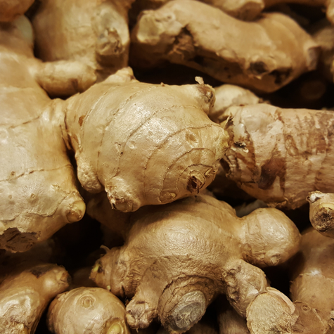
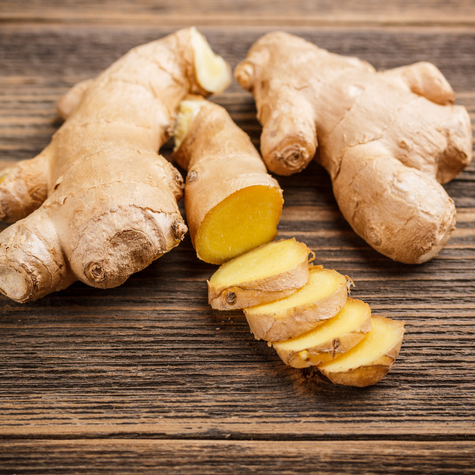

Ginger
Ginger is a flowering plant whose rhizome, commonly known as ginger root, is widely used as a spice and for its medicinal properties. Native to Southeast Asia, ginger has a sharp, spicy flavor and a distinct aroma that makes it popular in cooking, baking, and beverages like tea. It is known for its anti-inflammatory and antioxidant effects and is often used to relieve nausea, aid digestion, and reduce cold symptoms. Fresh ginger is commonly used in Asian dishes, while dried or ground ginger is used in baked goods like gingerbread. Its health benefits and culinary versatility have made it a valuable ingredient in both traditional and modern kitchens around the world.


